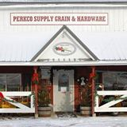
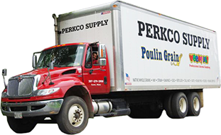

About Us


Perkco Supply has been around since 1984 supplying the people of central Maine with quality agricultural and hardware products. The store came to be when a local farmer, Charlie Perkins, planted oats in some of his fields a harvested and bagged the oats. He got requests from other farmer to sell his bagged oats and so he did. This cased a chain reaction with farmers requesting he sell different stuff and eventually he started up a small feed and grain store called Perkco Supply. As the years went on more and more stuff was requested of the small store, and so we kept adding to our inventory to meet the needs of our customers, until it eventually came to what it is today.
We are still a growing business and still taking suggestions and requests of a new product to stock our shelves with. Also, if we don't have the product in our store that you are looking for, most of the time we would be able to get it for you! Again, we are a small town, family run business that strives on making each and every customer happy and feel that they have spent their hard-earned money well. Therefore, we will do everything in our ability to make sure you get what you need.
| Perkco Supply inc.
|
| 1326 Exeter Rd, Exeter, Maine
|
| 1.800.453.3337
|
| 207.379.2900
|
| Map to Perkco!
|